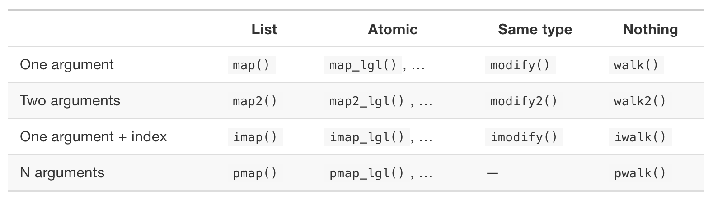
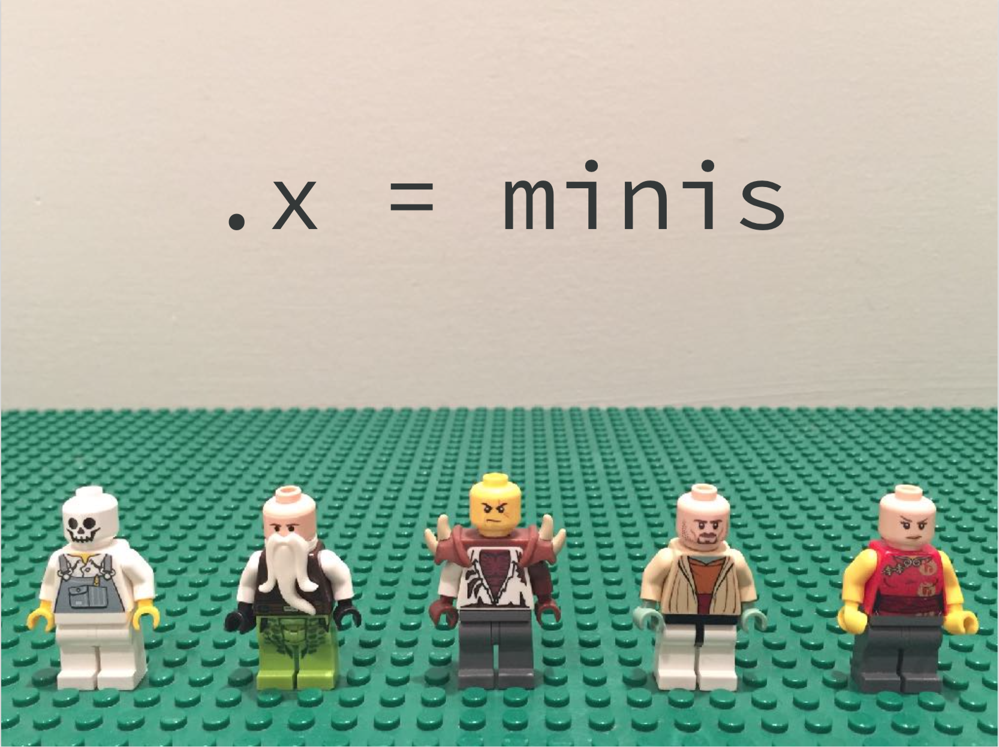
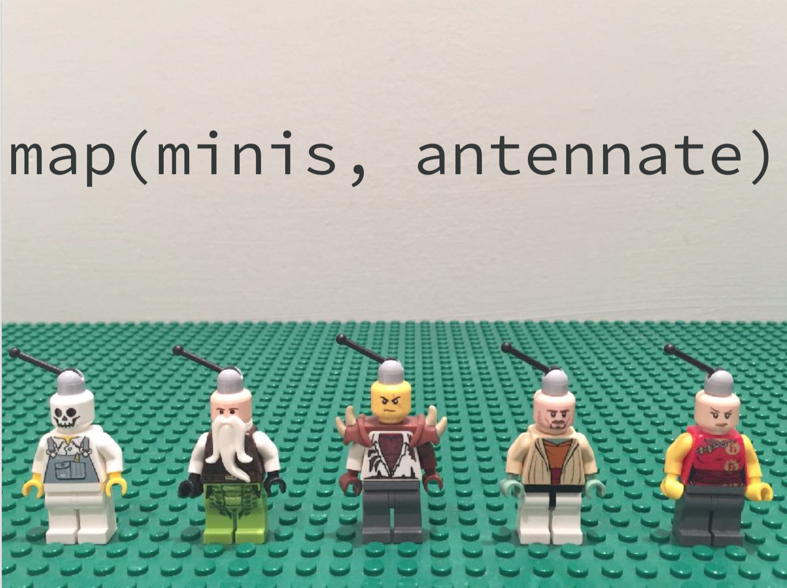

Lecture 5 - Tidy control flow in R#
Lecture learning objectives:#
By the end of this lecture and worksheet 5, students should be able to:
Explain what a grouped data frame is, and how it can be used
Use {dplyr}’s
group_by+summarizeto perform the split-apply-combine approach in R to iterate over and summarize data by groupsIdentify missing and erroneous values and manage them by removing (via {dplyr}’s
filter) or replacing (using {dplyr}’smutate+case_when)Identify where in R code a commonly used functional, a {purrr}’s
map*function, could be used in place of for loops and write code to do this
library(gapminder)
library(tidyverse)
options(repr.matrix.max.rows = 10)
── Attaching core tidyverse packages ───────────────────────────────────────────── tidyverse 2.0.0 ──
✔ dplyr 1.1.2 ✔ readr 2.1.4
✔ forcats 1.0.0 ✔ stringr 1.5.0
✔ ggplot2 3.4.3 ✔ tibble 3.2.1
✔ lubridate 1.9.2 ✔ tidyr 1.3.0
✔ purrr 1.0.2
── Conflicts ─────────────────────────────────────────────────────────────── tidyverse_conflicts() ──
✖ dplyr::filter() masks stats::filter()
✖ dplyr::lag() masks stats::lag()
ℹ Use the conflicted package (<http://conflicted.r-lib.org/>) to force all conflicts to become errors
Change or remove specific values#
Sometimes we’d like to selectively change values, we can do this using control flow within
mutateA related task is removing rows where there are NAs, either in a specified column or across the whole data frame or tibble
Selectively change a values#
What if we want to programatically change certain values? For example, update the country name “Cambodia” to its official English name, “Kingdom of Cambodia”?
If we want to change one or more (but not all things) in a column, one function we can use is case_when inside a mutate call:
gapminder %>%
mutate(country = case_when(country == "Cambodia" ~ "Kingdom of Cambodia",
TRUE ~ country))
Error: Problem with `mutate()` input `country`.
✖ must be a character vector, not a `factor` object.
ℹ Input `country` is `case_when(...)`.
Traceback:
1. gapminder %>% mutate(country = case_when(country == "Cambodia" ~
. "Kingdom of Cambodia", TRUE ~ country))
2. withVisible(eval(quote(`_fseq`(`_lhs`)), env, env))
3. eval(quote(`_fseq`(`_lhs`)), env, env)
4. eval(quote(`_fseq`(`_lhs`)), env
...
Ah! This doesn’t work? What is going on here? Let’s look at the structure of gapminder:
str(gapminder)
tibble [1,704 × 6] (S3: tbl_df/tbl/data.frame)
$ country : Factor w/ 142 levels "Afghanistan",..: 1 1 1 1 1 1 1 1 1 1 ...
$ continent: Factor w/ 5 levels "Africa","Americas",..: 3 3 3 3 3 3 3 3 3 3 ...
$ year : int [1:1704] 1952 1957 1962 1967 1972 1977 1982 1987 1992 1997 ...
$ lifeExp : num [1:1704] 28.8 30.3 32 34 36.1 ...
$ pop : int [1:1704] 8425333 9240934 10267083 11537966 13079460 14880372 12881816 13867957 16317921 22227415 ...
$ gdpPercap: num [1:1704] 779 821 853 836 740 ...
country (and continent) are factors! Let’s change these to character vectors so we can manipulate the character values they hold. We’ll make a new tibble named gap to do this:
gap <- gapminder %>%
mutate(country = as.character(country),
continent = as.character(continent))
OK, now let’s try that conditional mutate again!
gap <- gap %>%
mutate(country = case_when(country == "Cambodia" ~ "Kingdom of Cambodia",
TRUE ~ country))
gap
| country | continent | year | lifeExp | pop | gdpPercap |
|---|---|---|---|---|---|
| <chr> | <chr> | <int> | <dbl> | <int> | <dbl> |
| Afghanistan | Asia | 1952 | 28.801 | 8425333 | 779.4453 |
| Afghanistan | Asia | 1957 | 30.332 | 9240934 | 820.8530 |
| Afghanistan | Asia | 1962 | 31.997 | 10267083 | 853.1007 |
| Afghanistan | Asia | 1967 | 34.020 | 11537966 | 836.1971 |
| Afghanistan | Asia | 1972 | 36.088 | 13079460 | 739.9811 |
| ⋮ | ⋮ | ⋮ | ⋮ | ⋮ | ⋮ |
| Zimbabwe | Africa | 1987 | 62.351 | 9216418 | 706.1573 |
| Zimbabwe | Africa | 1992 | 60.377 | 10704340 | 693.4208 |
| Zimbabwe | Africa | 1997 | 46.809 | 11404948 | 792.4500 |
| Zimbabwe | Africa | 2002 | 39.989 | 11926563 | 672.0386 |
| Zimbabwe | Africa | 2007 | 43.487 | 12311143 | 469.7093 |
Did it work?
gap %>%
filter(country == "Kingdom of Cambodia")
| country | continent | year | lifeExp | pop | gdpPercap |
|---|---|---|---|---|---|
| <chr> | <chr> | <int> | <dbl> | <int> | <dbl> |
| Kingdom of Cambodia | Asia | 1952 | 39.417 | 4693836 | 368.4693 |
| Kingdom of Cambodia | Asia | 1957 | 41.366 | 5322536 | 434.0383 |
| Kingdom of Cambodia | Asia | 1962 | 43.415 | 6083619 | 496.9136 |
| Kingdom of Cambodia | Asia | 1967 | 45.415 | 6960067 | 523.4323 |
| Kingdom of Cambodia | Asia | 1972 | 40.317 | 7450606 | 421.6240 |
| ⋮ | ⋮ | ⋮ | ⋮ | ⋮ | ⋮ |
| Kingdom of Cambodia | Asia | 1987 | 53.914 | 8371791 | 683.8956 |
| Kingdom of Cambodia | Asia | 1992 | 55.803 | 10150094 | 682.3032 |
| Kingdom of Cambodia | Asia | 1997 | 56.534 | 11782962 | 734.2852 |
| Kingdom of Cambodia | Asia | 2002 | 56.752 | 12926707 | 896.2260 |
| Kingdom of Cambodia | Asia | 2007 | 59.723 | 14131858 | 1713.7787 |
Selectively change two or more values with case_when#
case_when will also let us easily modify > 2 cases. What if, for example, we wanted to change the continents from their English name to their French name?
french_contients <- gap %>%
mutate(continent = case_when(continent == "Asia" ~ "Asie",
continent == "Europe" ~ "L'Europe",
continent == "Africa" ~ "Afrique",
continent == "Americas" ~ "les amériques",
continent == "Oceania" ~ "Océanie"))
head(french_contients)
| country | continent | year | lifeExp | pop | gdpPercap |
|---|---|---|---|---|---|
| <chr> | <chr> | <int> | <dbl> | <int> | <dbl> |
| Afghanistan | Asie | 1952 | 28.801 | 8425333 | 779.4453 |
| Afghanistan | Asie | 1957 | 30.332 | 9240934 | 820.8530 |
| Afghanistan | Asie | 1962 | 31.997 | 10267083 | 853.1007 |
| Afghanistan | Asie | 1967 | 34.020 | 11537966 | 836.1971 |
| Afghanistan | Asie | 1972 | 36.088 | 13079460 | 739.9811 |
| Afghanistan | Asie | 1977 | 38.438 | 14880372 | 786.1134 |
What if we don’t want to change Asia?
french_contients <- gap %>%
mutate(continent = case_when(#continent == "Asia" ~ "Asie",
continent == "Europe" ~ "L'Europe",
continent == "Africa" ~ "Afrique",
continent == "Americas" ~ "les amériques",
continent == "Oceania" ~ "Océanie"))
head(french_contients)
| country | continent | year | lifeExp | pop | gdpPercap |
|---|---|---|---|---|---|
| <chr> | <chr> | <int> | <dbl> | <int> | <dbl> |
| Afghanistan | NA | 1952 | 28.801 | 8425333 | 779.4453 |
| Afghanistan | NA | 1957 | 30.332 | 9240934 | 820.8530 |
| Afghanistan | NA | 1962 | 31.997 | 10267083 | 853.1007 |
| Afghanistan | NA | 1967 | 34.020 | 11537966 | 836.1971 |
| Afghanistan | NA | 1972 | 36.088 | 13079460 | 739.9811 |
| Afghanistan | NA | 1977 | 38.438 | 14880372 | 786.1134 |
Uh oh, now Asia is NA?? We need to say TRUE ~ column_name to tell R to not put in NA’s in the non-specified class, but instead leave the values that were already there:
french_contients <- gap %>%
mutate(continent = case_when(#continent == "Asia" ~ "Asie",
continent == "Europe" ~ "L'Europe",
continent == "Africa" ~ "Afrique",
continent == "Americas" ~ "les amériques",
continent == "Oceania" ~ "Océanie",
TRUE ~ continent))
head(french_contients)
| country | continent | year | lifeExp | pop | gdpPercap |
|---|---|---|---|---|---|
| <chr> | <chr> | <int> | <dbl> | <int> | <dbl> |
| Afghanistan | Asia | 1952 | 28.801 | 8425333 | 779.4453 |
| Afghanistan | Asia | 1957 | 30.332 | 9240934 | 820.8530 |
| Afghanistan | Asia | 1962 | 31.997 | 10267083 | 853.1007 |
| Afghanistan | Asia | 1967 | 34.020 | 11537966 | 836.1971 |
| Afghanistan | Asia | 1972 | 36.088 | 13079460 | 739.9811 |
| Afghanistan | Asia | 1977 | 38.438 | 14880372 | 786.1134 |
Removing rows where a specific column holds NAs#
Here, we’d like to remove the rows where the column x is NA:
df <- tibble(x = c(3, 1, 2, NA), y = c("z", "a", NA, "b"))
df
| x | y |
|---|---|
| <dbl> | <chr> |
| 3 | z |
| 1 | a |
| 2 | NA |
| NA | b |
drop_na is the tidyverse function we can use to do this.
In this case we pass the column for which we would like to use to drive the removal of rows (based on the presence of NAs in that row):
df %>% drop_na(x:y)
| x | y |
|---|---|
| <dbl> | <chr> |
| 3 | z |
| 1 | a |
Removing all rows where there is a NA in any column#
If no arguments are given to drop_na, then all rows with NAs will be dropped:
df %>% drop_na()
| x | y |
|---|---|
| <dbl> | <chr> |
| 3 | z |
| 1 | a |
Iterate over groups of rows#
summarise calculates summaries over rows#
Examples might be calculating the mean horsepower and mean miles per gallon of cars in the mtcars data set:
# calculate mean hp and mpg for all cars
mtcars %>%
summarise(mean_hp = mean(hp),
mean_mpg = mean(mpg),
sum_hp = sum(hp))
| mean_hp | mean_mpg | sum_hp |
|---|---|---|
| <dbl> | <dbl> | <dbl> |
| 146.6875 | 20.09062 | 4694 |
Iteration with group_by + summarise#
Useful when you want to do something repeatedly to a group of rows
An example, say we want to calculate the average life expectancy (
lifeExp) for each continent from the gapminder data set
# calculate the average life expectancy for each continent
gapminder %>%
group_by(continent) %>%
summarise(mean_life_exp = mean(lifeExp))
| continent | mean_life_exp |
|---|---|
| <fct> | <dbl> |
| Africa | 48.86533 |
| Americas | 64.65874 |
| Asia | 60.06490 |
| Europe | 71.90369 |
| Oceania | 74.32621 |
We can also group_by multiple columns, for example what if we want to know the mean life expectancy for each continent and each year:
# calculate the mean life expectancy for each continent and each year
gapminder %>%
group_by(continent, year) %>%
summarise(mean_life_exp = mean(lifeExp))
`summarise()` has grouped output by 'continent'. You can override using the `.groups` argument.
| continent | year | mean_life_exp |
|---|---|---|
| <fct> | <int> | <dbl> |
| Africa | 1952 | 39.13550 |
| Africa | 1957 | 41.26635 |
| Africa | 1962 | 43.31944 |
| Africa | 1967 | 45.33454 |
| Africa | 1972 | 47.45094 |
| ⋮ | ⋮ | ⋮ |
| Oceania | 1987 | 75.3200 |
| Oceania | 1992 | 76.9450 |
| Oceania | 1997 | 78.1900 |
| Oceania | 2002 | 79.7400 |
| Oceania | 2007 | 80.7195 |
Watch those NA’s!#
Calculate the maximum beak length for each of the Penguin species in the {palmerpenguins} penguins dataset.
library(palmerpenguins)
penguins
| species | island | bill_length_mm | bill_depth_mm | flipper_length_mm | body_mass_g | sex | year |
|---|---|---|---|---|---|---|---|
| <fct> | <fct> | <dbl> | <dbl> | <int> | <int> | <fct> | <int> |
| Adelie | Torgersen | 39.1 | 18.7 | 181 | 3750 | male | 2007 |
| Adelie | Torgersen | 39.5 | 17.4 | 186 | 3800 | female | 2007 |
| Adelie | Torgersen | 40.3 | 18.0 | 195 | 3250 | female | 2007 |
| Adelie | Torgersen | NA | NA | NA | NA | NA | 2007 |
| Adelie | Torgersen | 36.7 | 19.3 | 193 | 3450 | female | 2007 |
| ⋮ | ⋮ | ⋮ | ⋮ | ⋮ | ⋮ | ⋮ | ⋮ |
| Chinstrap | Dream | 55.8 | 19.8 | 207 | 4000 | male | 2009 |
| Chinstrap | Dream | 43.5 | 18.1 | 202 | 3400 | female | 2009 |
| Chinstrap | Dream | 49.6 | 18.2 | 193 | 3775 | male | 2009 |
| Chinstrap | Dream | 50.8 | 19.0 | 210 | 4100 | male | 2009 |
| Chinstrap | Dream | 50.2 | 18.7 | 198 | 3775 | female | 2009 |
penguins %>%
group_by(species) %>%
summarise(max_bill_length = max(bill_length_mm))
| species | max_bill_length |
|---|---|
| <fct> | <dbl> |
| Adelie | NA |
| Chinstrap | 58 |
| Gentoo | NA |
Huh???
By default, summary statistics functions in R return NA if there are any NA observations in the data… This is often not ideal, what we’d like would be for R to just ignore the NA’s and kindly return us the statistic we asked for. We can specify this by setting the na.rm argument to TRUE.
penguins %>%
group_by(species) %>%
summarise(max_bill_length = max(bill_length_mm, na.rm = TRUE))
| species | max_bill_length |
|---|---|
| <fct> | <dbl> |
| Adelie | 46.0 |
| Chinstrap | 58.0 |
| Gentoo | 59.6 |
Grouped mutate#
Sometimes you don’t want to collapse the n rows for each group into one row. You want to keep your groups, but compute within them.
Let’s make a new variable that is the years of life expectancy gained (lost) relative to 1952, for each individual country. We group by country and use mutate to make a new variable. The first function extracts the first value from a vector. Notice that first is operating on the vector of life expectancies within each country group.
# calculate life expectancy gained (or lost) relative to 1952
gapminder %>%
group_by(country) %>%
mutate(life_exp_gain = lifeExp - first(lifeExp)) %>%
head()
| country | continent | year | lifeExp | pop | gdpPercap | life_exp_gain |
|---|---|---|---|---|---|---|
| <fct> | <fct> | <int> | <dbl> | <int> | <dbl> | <dbl> |
| Afghanistan | Asia | 1952 | 28.801 | 8425333 | 779.4453 | 0.000 |
| Afghanistan | Asia | 1957 | 30.332 | 9240934 | 820.8530 | 1.531 |
| Afghanistan | Asia | 1962 | 31.997 | 10267083 | 853.1007 | 3.196 |
| Afghanistan | Asia | 1967 | 34.020 | 11537966 | 836.1971 | 5.219 |
| Afghanistan | Asia | 1972 | 36.088 | 13079460 | 739.9811 | 7.287 |
| Afghanistan | Asia | 1977 | 38.438 | 14880372 | 786.1134 | 9.637 |
Purrring instead of for loops#

https://purrr.tidyverse.org/
{purrr} map_* functions#
alternative to
forloops that help you make less syntax errors
If you have programmed in R before#
purrr is an alternative to “apply” functions
purrr::map() ≈ base::lapply()
Iterating over columns of a data frame#
Say, for example we wanted to calculate the median for each column in the mtcars data frame:
head(mtcars)
| mpg | cyl | disp | hp | drat | wt | qsec | vs | am | gear | carb | |
|---|---|---|---|---|---|---|---|---|---|---|---|
| <dbl> | <dbl> | <dbl> | <dbl> | <dbl> | <dbl> | <dbl> | <dbl> | <dbl> | <dbl> | <dbl> | |
| Mazda RX4 | 21.0 | 6 | 160 | 110 | 3.90 | 2.620 | 16.46 | 0 | 1 | 4 | 4 |
| Mazda RX4 Wag | 21.0 | 6 | 160 | 110 | 3.90 | 2.875 | 17.02 | 0 | 1 | 4 | 4 |
| Datsun 710 | 22.8 | 4 | 108 | 93 | 3.85 | 2.320 | 18.61 | 1 | 1 | 4 | 1 |
| Hornet 4 Drive | 21.4 | 6 | 258 | 110 | 3.08 | 3.215 | 19.44 | 1 | 0 | 3 | 1 |
| Hornet Sportabout | 18.7 | 8 | 360 | 175 | 3.15 | 3.440 | 17.02 | 0 | 0 | 3 | 2 |
| Valiant | 18.1 | 6 | 225 | 105 | 2.76 | 3.460 | 20.22 | 1 | 0 | 3 | 1 |
medians <- vector("double", ncol(mtcars))
for (i in seq_along(mtcars)) {
medians[i] <- median(mtcars[[i]], na.rm = TRUE)
}
OK, then next we want to calculate the mean for all of the columns:
means <- vector("double", ncol(mtcars))
for (i in seq_along(mtcars)) {
means[i] <- mean(mtcars[[i]], na.rm = TRUE)
}
OK, and then the variance…
variances <- vector("double", ncol(mtcars))
for (i in seq_along(mtcars)) {
variances[i] <- var(mtcars[[i]], na.rm = TRUE)
}
This is getting a little repetitive… What are we repeating?
Can we write this as a function?#
Given that functions are objects in R, this seems reasonable!
medians <- vector("double", ncol(mtcars))
for (i in seq_along(mtcars)) {
medians[i] <- median(mtcars[[i]], na.rm = TRUE)
}
This is essentially the guts of purrr::map_dbl. The only difference is that is coded in C and the use of ... for additional arguments.
mds_map <- function(x, fun) {
out <- vector("double", ncol(x))
for (i in seq_along(x)) {
out[i] <- fun(x[[i]], na.rm = TRUE)
}
out
}
mds_map(mtcars, min)
- 10.4
- 4
- 71.1
- 52
- 2.76
- 1.513
- 14.5
- 0
- 0
- 3
- 1
Functionals#
We have just written what is called a functional.
A functional is a function that takes a function (and other things) as an input and returns a vector as output.
R has several other functionals outside of purrr that you might have already encountered: lapply, apply, tapply, integrate or optim.
What can you do with functionals?#
Common use is as an alternative to for loops
For loops are actually quite effective for iteration, and efficient when used, however it is easy to make mistakes when setting them up as you have to:
pre-allocate space for the output
iterate over the thing the right amount of times
properly use the iteration index
Of course someone has to write for loops#
It doesn’t have to be you#
– Jenny Bryan, Software Engineer at RStudio and UBC MDS Founder
The purrr::map* family of functions#

{kind=link}
Source: Advanced R by Hadley Wickham
Let’s start at the beginning with the most general purrr function: map#
map(.x, .f, ...)
Above reads as: for every element of .x apply .f
and can be pictured as:

Or picture as…
{kind=link}
Source: Row-oriented workflows in R with the tidyverse by Jenny Bryan
{kind=link}
Source: Row-oriented workflows in R with the tidyverse by Jenny Bryan
purrr::map test drive#
Let’s calculate the median of all the columns of the mtcars data frame using purrr::map:
library(purrr)
map(mtcars, median)
- $mpg
- 19.2
- $cyl
- 6
- $disp
- 196.3
- $hp
- 123
- $drat
- 3.695
- $wt
- 3.325
- $qsec
- 17.71
- $vs
- 0
- $am
- 0
- $gear
- 4
- $carb
- 2
That looks different from our mds_map function! The output is of type list. We can use map_df to get a vector of type double:
map_dbl(mtcars, median)
- mpg
- 19.2
- cyl
- 6
- disp
- 196.3
- hp
- 123
- drat
- 3.695
- wt
- 3.325
- qsec
- 17.71
- vs
- 0
- am
- 0
- gear
- 4
- carb
- 2
And map_df will give us a tibble:
map_df(mtcars, median)
| mpg | cyl | disp | hp | drat | wt | qsec | vs | am | gear | carb |
|---|---|---|---|---|---|---|---|---|---|---|
| <dbl> | <dbl> | <dbl> | <dbl> | <dbl> | <dbl> | <dbl> | <dbl> | <dbl> | <dbl> | <dbl> |
| 19.2 | 6 | 196.3 | 123 | 3.695 | 3.325 | 17.71 | 0 | 0 | 4 | 2 |
So now it’s super efficient and easy to get several summary stats across columns!
map_df(mtcars, median)
map_df(mtcars, mean)
map_df(mtcars, max)
map_df(mtcars, min)
| mpg | cyl | disp | hp | drat | wt | qsec | vs | am | gear | carb |
|---|---|---|---|---|---|---|---|---|---|---|
| <dbl> | <dbl> | <dbl> | <dbl> | <dbl> | <dbl> | <dbl> | <dbl> | <dbl> | <dbl> | <dbl> |
| 19.2 | 6 | 196.3 | 123 | 3.695 | 3.325 | 17.71 | 0 | 0 | 4 | 2 |
| mpg | cyl | disp | hp | drat | wt | qsec | vs | am | gear | carb |
|---|---|---|---|---|---|---|---|---|---|---|
| <dbl> | <dbl> | <dbl> | <dbl> | <dbl> | <dbl> | <dbl> | <dbl> | <dbl> | <dbl> | <dbl> |
| 20.09062 | 6.1875 | 230.7219 | 146.6875 | 3.596563 | 3.21725 | 17.84875 | 0.4375 | 0.40625 | 3.6875 | 2.8125 |
| mpg | cyl | disp | hp | drat | wt | qsec | vs | am | gear | carb |
|---|---|---|---|---|---|---|---|---|---|---|
| <dbl> | <dbl> | <dbl> | <dbl> | <dbl> | <dbl> | <dbl> | <dbl> | <dbl> | <dbl> | <dbl> |
| 33.9 | 8 | 472 | 335 | 4.93 | 5.424 | 22.9 | 1 | 1 | 5 | 8 |
| mpg | cyl | disp | hp | drat | wt | qsec | vs | am | gear | carb |
|---|---|---|---|---|---|---|---|---|---|---|
| <dbl> | <dbl> | <dbl> | <dbl> | <dbl> | <dbl> | <dbl> | <dbl> | <dbl> | <dbl> | <dbl> |
| 10.4 | 4 | 71.1 | 52 | 2.76 | 1.513 | 14.5 | 0 | 0 | 3 | 1 |
What if our data frame had missing values?#
Let’s make some to see the consequences…
mtcars_NA <- mtcars
mtcars_NA[1, 1] <- NA
map_dbl(mtcars_NA, median)
- mpg
- <NA>
- cyl
- 6
- disp
- 196.3
- hp
- 123
- drat
- 3.695
- wt
- 3.325
- qsec
- 17.71
- vs
- 0
- am
- 0
- gear
- 4
- carb
- 2
How do we tell median to ignore NA’s? Using na.rm = TRUE! But how do we add this to our map_dbl call?
map_dbl(mtcars_NA, median, na.rm = TRUE)
- mpg
- 19.2
- cyl
- 6
- disp
- 196.3
- hp
- 123
- drat
- 3.695
- wt
- 3.325
- qsec
- 17.71
- vs
- 0
- am
- 0
- gear
- 4
- carb
- 2
That’s all we will learn of the {purrr} functions for now - however we will meet them again (and learn more about them) next week when we start working with nested data frames.
What did we learn today?#
How to use
case_whento selectively change values in a data frame (similar to base Rifstatements)How to use
group_byto iterate over groups of rows (similar toforloops in base R)How to use {purrr}
map_*functions to iterate over columns (similar toapplyin base R)
Attributions#
Stat 545 created by Jenny Bryan
R for Data Science by Garrett Grolemund & Hadley Wickham